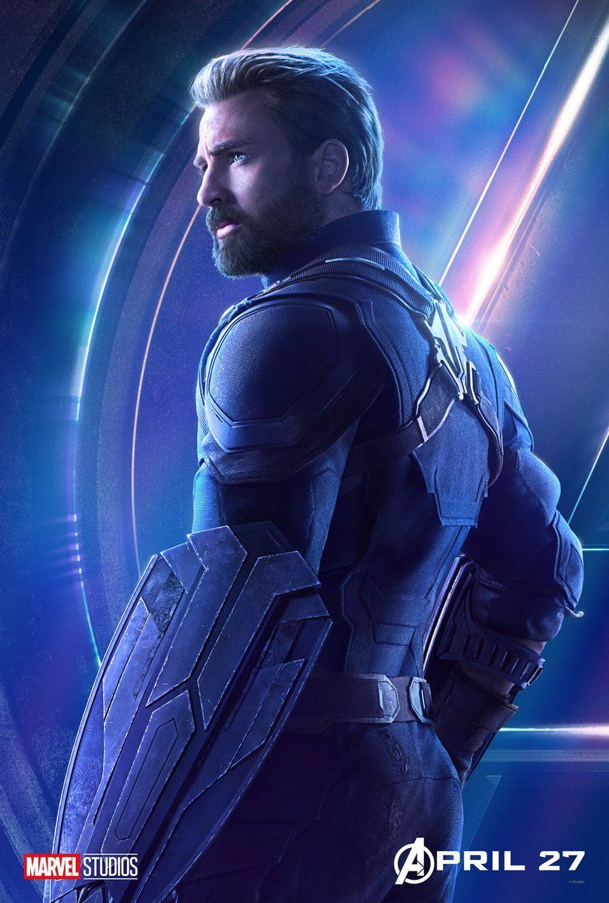

Wanda Maximoff
Interpretada por la preciosa Elizabeth Olsen, la Bruja Escarlata ha sido un personaje en mi parecer, traído al cine de la mejor manera. Hermana de Quicksilver e interés amoroso de Visión.
Natasha Romanoff
Scarleth Johansson se hizo dueña de este papel desde el primer momento. Black Widow, un personaje para el que exigimos una película en solitario.
Stephen Strange
La pelicula del Hechicero Supremo ya esta a la vuelta de la esquina y sabemos que puede tomarnos por sorpresa y ser un éxito. La elección de Benedicto Cumberbatch como el Dr. Extraño a sido de lo mas acertada a mi pensar, no solo por su gran parecido físico al personaje del cómic, sino por la calidad del actor.
Star Lord
Chris Pratt nos agarro por sorpresa con este papel que fue uno de los que hizo posible el éxito de Guardianes de la Galaxia y es que Peter Quill el enamorado de Gamora fue un personaje bien desarrollado y llevado de manera excepcional a la gran pantalla.
Clint Barton
El mejor amigo de Black Widow, Ojo de Halcón, el hombre con la mejor puntería, suena para tener su propia serie en Netflix y eso haría muy feliz a Jeremy Renner quien lo interpreta en el Cine.
Vision
Conocido en ingles como The Vision, este personaje nacido del desarrollo de la inteligencia artificial en las películas a sido llevado a la vida en el cuerpo del actor ingles Paul Bettany. Le debe su existencia física a Ultron y Iron Man. Esta iniciando una relación con Wanda.
Bruce Banner
Hulk es mas que un personaje de película, el es un todo del mundo de los fan del Cómic. Muchos esperamos la adaptación de Planet Hulk que sin duda daría un éxito impensable a Marvel. Por el momento y pidiendo a Dios que esto suceda, tendremos que conformarnos con ver a Mark Rufalo en este papel en la próxima película de Thor. Hulk Aplasta!
Tony Stark
Como olvidar a Iron Man si fue con el que todo este Universo inicio, el personaje quedo en manos de Robert Downey Jr. y a estas alturas no podemos imaginar a nadie mas interpretándolo. Iron Man 4 se acerca y yo quiero a Pepper a su lado, se imaginan a Rescue!?
Steve Rogers
Chris Evans rechazo varias veces el personaje por miedo a su pasado como Superheroe en el cine. Pero en su carrera este ha sido el papel que mas relevancia y reconocimiento le ha dado. Capitán América y su ultima película son un éxito en taquilla y Evans no puede quejarse.
Thor Odison
El Dios del trueno ha recibido vida en el cine por medio de Chris Hemsworth, el australiano esta por iniciar la filmación de Thor Ragnarok, el film en el que veremos el apocalipsis nórdico. Hemos recibido de buena manera al personaje, aunque pienso que le hace falta el reconocimiento que merece y que espero le sea otorgado en esta película.
T'Chala
Su majestad el Rey de Wakanda, fue presentado en Capitán America: Civil War y nos dejo un muy buen sabor de boca, la interpretación de Chad Boseman dejo a muchos satisfechos y con ganas de ver ya su película en solitario, Black Panter.
Peter Parker
No diré que es el mejor Spiderma, porque para mi el de turno, siempre ha sido el mejor. Pero Tom Holland lo hace bien y convence con un hombre araña joven y a mi parecer muy cercano al cómic. Spiderman Homecoming es su próxima película.